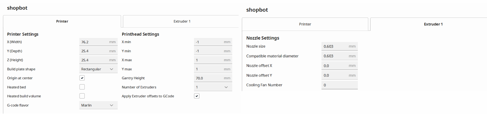
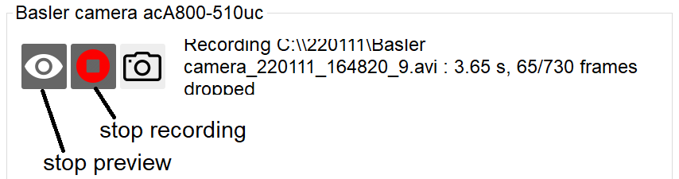
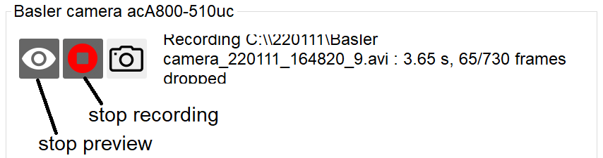
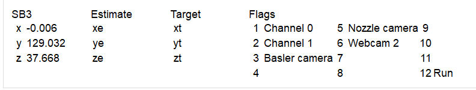
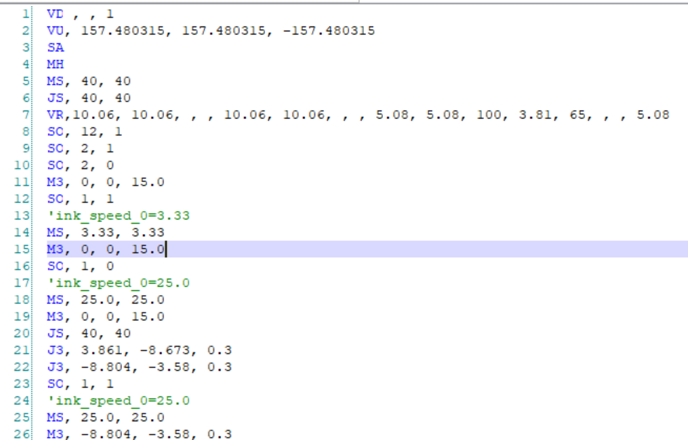

Software
Getting started
This software was written for Windows. Certain elements, like folder opening buttons  and the system that tracks whether the pressure should be on or off during prints, will break outside of Windows.
and the system that tracks whether the pressure should be on or off during prints, will break outside of Windows.
- Install Python
- Download the software from Github. Because this software is continually updated, you can keep the most updated version of the code by cloning the repository through Github. For beginners:
- Install the Shopbot control software
- By default, the Shopbot control software shows 4 output flags, but it allows 12. To increase the number of visible output flags for signaling additional devices (e.g. pressure channels, lights, etc.), go into Move/Cut Mode. Once in Move/Cut - right click in the input/output section of the red position window. Here you can set the number of inputs/outputs displayed up to 12 in the red window
- You will need to start up Shopbot independently the first time. For the pop-up message that occurs, check the box to not show the message again. Load all the setting you will need into shopbot at this time.
- Install Ultimaker Cura slicer. Save it to the system's 'program files' folder
- Create a free ultimaker account
- Once downloaded and opened, go to the setting tab and add printer. Under the 'add a non-networked printer', there should be a 'custom' option with a drop down menu. Click on the 'Custom FFF printer' and rename it to your preference.
- A 'machine setting' window should pop up, where you will place corresponding variables to the printer.
- 
- Set the print resolution to extra coarse - 0.6mm and unclick the Adhesion box and Support box in the same window
- Within the print settings 'Custom', make certain the 'Infill' section's density is set to 0.0, the 'Support' section's Generate Support box is unchecked, and the 'Build Plate Adhesion' type is set to None.
- Essentially, any supports for the structure are redundant as it is already supported in the bath. It will only cause excess ink to be extruded and ruin your print.
- Note that the Cura slicer takes 1/3 inch off the edges, so you can add that much to the X/Y/Z measurements. However, measurements of 42.34mm by 103.14mm will have you go past the container dimensions.
- When creating an STL file through Onshape, create measurements in millimeters, even if it states in inches. Cura assumes all measurements are in millimeters.
- Install Python packages listed in requirements.txt.
- Launch the GUI.
- In Miniconda: python "MyGithubPath\ShopbotPyQt\pythonGUI\sbgui.py", replacing "MyGitHubPath" with your full github path.
- In a Jupyter console from the pythonGUI folder: run sbgui.py
Using the GUI
Menu
▼OpenClose

- The "log" button opens a separate window holding a log of all of the status updates in all of the windows.
- The "speed calibration tool" button opens a separate window holding the flow rate calibration tool.
- The "convert" button opens a separate window holding the file conversion tool.
- The "settings"
 button opens a separate window that holds settings for all of the modules
button opens a separate window that holds settings for all of the modules
Settings
▼OpenClose

All of the settings can be collectively saved to a .yml file via "Save settings to file." A previously saved settings file can be loaded via "Load settings from file". The checkbox "Save settings for next session" automatically saves all settings to configs/config.yml when the GUI is closed. configs/config.yml is automatically loaded on startup of the GUI.
Conversion Tool
▼OpenClose

The conversion window can currently take in both STL and GCODE files to be converted into an SBP file. However, if an STL file is inserted, the GUI will only open the Cura slicer. You must first create the GCODE file, save it, and then choose the file within the GUI.
To add a file to convert, click the "Load File" button. The file name will then be displayed.
If there is a need to change the name of the save file, you can update it within the textbox for 'saving file under name of'.
To save the SBP file to the same location as the original file, click the 'save to file folder' button. Otherwise, a new save location can be selected by clicking the 'choose save location' button. You cannot choose a save location while the checkbox is selected.
To change between flow channels for the resulting sbp file, select between radio buttons "Channel 0" and "Channel 1"
To add the SBP file to the Shopbot queue, click the 'load to queue after conversion' checkbox.
To run the conversion on the selected file, click the 'convert file' button. The window should close automatically.
If you exit out of the window accidentally, the window keeps all previous settings. This includes when there is a successful conversion.
Currently, the conversion program must override a method within sbprint.py that obtains the flow speed. As a result, set target speed in the speed calibration tool between 1 and 10 to start with, and adjust from there.
Speed calibration tool
▼OpenClose


Each time a new ink is loaded onto the printer, the pressure should be calibrated. Pressures can vary based on ink rheology, length of tubing, and pinch points in the tubing. The calibration process is as follows:
- Load ink of known density onto printer. Start flow until the tubing is completely full, and ink is exiting the nozzle.
- If you have previously saved the density for this fluid, select the sample from the "Load density" menu. If you type the beginning of the sample name into the "Sample" field, it will narrow the "Load density" list down to samples that start with that value. Selecting an ink loads the Sample name and Density
- If you have not previously loaded the density for this fluid, fill in the "Sample" and "Density" fields. Clicking "Save" will store this new density in the density.yml file in the configs folder, so it will be available the next time you load the sample
- Fill in the nozzle inner diameter.
- Fill in the target flow speed
- Mass the container. Fill in "init wt" in row 1. Place container under nozzle.
- In the Fluigent module, put a pressure, e.g. 100, into the "Set pressure" box. Put a time, e.g. 15, into the "fixed time" box. Press "Go", next to the fixed time box. This will turn on the pressure to, e.g. 100 mBar for 15 seconds, then turn it off. It will automatically put the values for pressure and time into the top available row in the calibration table.
- Mass the container. Fill in "final wt" in row 1. This will automatically fill in the "speed" value for row 1 and plot it on the graph.
- Repeat previous 3 steps at varying pressures, filling in rows 2 and beyond until the calibration curve no longer shifts with additional points.
- When you are done with calibration, click "Use this pressure". This will take the "Pressure" value for the given target speed and fill the pressure into the "Shopbot" module, so Channel 1 will turn to that pressure during printing. You can also fill this value in manually in the "Shopbot" module.
- Click "Save" to save the entire calibration table and metadata to the export folder designated in "Settings"
Shopbot
▼OpenClose

The Shopbot module uses a file queue. The current file is marked with a "Play"  icon. The "Play" button sends the current file to the SB3 Shopbot program, which runs the file. Once the file is done, the current file proceeds to the next file. You can use the settings menu to determine whether to autoplay the next file or wait for the user to press play again.
icon. The "Play" button sends the current file to the SB3 Shopbot program, which runs the file. Once the file is done, the current file proceeds to the next file. You can use the settings menu to determine whether to autoplay the next file or wait for the user to press play again.
- To add files to the end of the queue, click the "load"
 button. You can load multiple files at once. To load the same file multiple times, you must use the "load"s button multiple times.
button. You can load multiple files at once. To load the same file multiple times, you must use the "load"s button multiple times.
- To remove files, click once on each file, then click the "remove"
 button.
button.
- To re-order the files, click and drag.
- To select a file as the current file to send to the Shopbot, double click on the file.
- To set the pressure that the pressure controller goes to during printing, use the "pressure during print" box. This can be filled in using the "Use this pressure" button in the speed calibration tool or filled in manually.

In the settings menu, the user can decide whether or not to autoplay files. You can either automatically start the next file once the first Shopbot file is done, or you can wait for the user to press play on each Shopbot file.
The folder that opens when the user clicks the "load" button on the main Shopbot module can be set via the settings. The "load" button sets the Shopbot file folder. The "link" button opens the Shopbot file folder in Windows Explorer.
Export
▼OpenClose

The export settings module sets where files will be saved, what they will be named, and which files to save.
- Use the "Load" button to select the folder where files will be exported.
- The folder status bar shows what folder files will be exported into
- The "Link" button opens the folder in Windows Explorer
- The value in the "Sample name" field is added to all exported files. Depending on the values in the Settings window, the "Sample name" is also the name of the subfolder into which all files are exported.
- The camera buttons
 can be toggled to automatically save or not save videos of the entire print when a file is sent to the Shopbot. The "Basler camera" is the high-resolution camera. The "Nozzle camera" is a webcam pointed at the nozzle. "Webcam 2" is pointed at the entire Shopbot.
can be toggled to automatically save or not save videos of the entire print when a file is sent to the Shopbot. The "Basler camera" is the high-resolution camera. The "Nozzle camera" is a webcam pointed at the nozzle. "Webcam 2" is pointed at the entire Shopbot.

The settings box contains many options for how to name folders. A folder is automatically created for each sample. A subfolder can be automatically created for each shopbot print file.
- To create a subfolder for each sample, select "Create folders"
- To include the sample name in the file name, select "Include sample: In file name"
- To include the sample name in the new folder, select "Include sample: In folder name"
- To make the folder name "[Sample]_[Date]", select "Include date: In sample folder name"
- To create an extra date subfolder inside of the sample folder, such that the folder will be "[Sample]/[Date]", select "Include date: As sample folder name".
- To only put the sample name in the folder and have no separate folder for each date, such that the folder will be "[Sample]", select "Include date: in no folder name".
- To include the time in the file name, select, "Include time: in file name"
- To include the shopbot .sbp file name in the sample folder name, such that the folder name will be "[Sample]_[Date]_[ShopbotFile]", select "Include SB file name: In sample folder name".
- To include the shopbot .sbp file name in the sample subfolder name, such that the folder name will be "[Sample]_[Date]/[ShopbotFile]", select "Include SB file name: As sample subfolder name".
- To leave the shopbot .sbp file name out of the folder names, select "Include SB file name: In no folder name"
- To include the shopbot .sbp file name in the file names, (e.g. a video file will be labeled by what shopbot file was being printed), select "Include SB file name: in file name"
- To change how the date is formatted in file names and folder names, change the "Date format" box. Use the Python strftime format.
- To change how the time is formatted in file names and folder names, change the "Time format" box. It is recommended that the time format include the date, since the date will not otherwise be added to file names. Use the Python strftime format.
- Duplicate suffix is the format to use if there is already an file with the name that you are requesting, and the program needs to add a suffix to the filename to avoid overwriting the existing file. {0:0=3d} adds a 3 digit counter to the end, e.g. 012
- Separator is the character to place in between parts of the file name. E.g. "_" might produce a file called "[Shopbot file name]_[device]_[date].[extension]", and "-" would produce a file called "[Shopbot file name]-[device]-[date].[extension]".
- A sample file name is provided at the bottom of the page and should automatically update.
Cameras
▼OpenClose
 

Each camera has its own module. The Basler camera is the high-resolution camera, and the nozzle camera and webcam 2 are webcams.
- To start the live camera preview, click the "start preview"
 button.
button.
- To stop the live camera preview, click the "stop preview"
 button.
button.
- To start recording, click the "start recording"
 button. The status bar will show how long the video has been recording, and how many frames have been lost during recording. Lost frames are filled in with duplicates from the last recorded frame, so videos should be as long as the recording time.
button. The status bar will show how long the video has been recording, and how many frames have been lost during recording. Lost frames are filled in with duplicates from the last recorded frame, so videos should be as long as the recording time.
- To stop recording and save, click the "stop recording"
 button. The status bar will show how many frames have been written to file.
button. The status bar will show how many frames have been written to file.
- To take a single still, click the "snapshot"
 button.
button.

Each camera has its own tab on the settings module.
- To log a status update for each frame, change the "log" setting to "All frames". To only log important status updates, select "Just critical". To keep all messages out of the log window, select "None".
- To maximize the frame rate, set the frame rate to a low value (e.g. 1), set the exposure through the "Exposure" field, type [Enter] or click "Save", then click "Auto" next to the Frame rate field.
- To manually set the frame rate, complete the Frame rate field and type [Enter] or click "Save". If the frame rate is too fast for the exposure time, the program will throw an error.
- Auto exposure is not yet implemented.
Fluigent
▼OpenClose
- To turn on the pressure for a certain channel on the Fluigent pressure controller, fill the "Set Pressure" box and either press [Enter] or click the top "Go" button, next to "indefinitely".
- To turn on the pressure for a certain channel on the Fluigent, fill the "Set Pressure" box, fill the "fixed time" box, and click the bottom "Go" button, next to "for fixed time".
- The bottom graph shows the recent pressure graph.

The settings box contains options for plotting and saving Fluigent data
- To save the table of pressure vs. time for the entire print, click the "Save pressure graph" checkbox.
- To change the frequency at which the software reads the pressure and stores it, change the "Time between readings" field.
- To change the length of time displayed on the plot, change the "Plot time range" field.
- To change the pressure range shown on the plot, from 0 to P, change the "Plot pressure range" field.
- To change the line color and caption color for a channel, change the "Channel color" field to a hex color value.
SBP Files
▼OpenClose

There are a total of 12 flags that can be assigned different variables for use with shopbot.
- Flags 1 and 2 are primarily for use with the extrudant
- Flags 3, 5, and 6 are connected to cameras
- Flag 12 is to run shopbot

To turn a designated flag on, write 'SO, #, 1', where # is the flag number. To turn it off, write 'SO, #, 0'
- for the fluigent flags (1,2), write 'SO, # 1' to turn flow/pressure on. Write 'SO, #, 0' to turn flow/pressure off.
- The fluigent and run flags (1/2, 12) must be turned off at the end of the file. 'SO, 12, 0' is the very last line.
Lines 1 to 10 are considered the header
- Each file must have the VD and VU commands placed first in the header. Theses commands designate Values for Display and Values for Values for Units. VU in simplicity tells the printer which way is up, with a negative Z value being considered positive/up.
- Move speed (MS) and Jump speed (JS) must also be assigned values within the header
- Then the values of ramp (VR) must be assigned
- For lines 9 and 10 in the example, an unused flag is being turned on/off to activate the system. This is needed after shopbot has started the run due to a glitch in the system.
- 'SO, 12, 1' is needed to actually start the shopbot. If it is not included, your file will never run.
Each command must have a comma separating each variable. 'M3 3, 5, 6' will not work because there is a missing comma between the M3 and 3.
- If a command starts with an M, it is a move. So M3 moves to the designated X, Y, and Z coordinates.
- If a command starts with a J, it is a jump. So J2 jumps to the designated X and Y coordinates
- If a command starts with a V, it is a value setup.
- MH is the command for move home, or where the stage is considered to be (0, 0, 0)
- SA sets the file to be done in absolute distances/ absolute mode
ink speed is a comment (started with ') to let you know the flow rate of the extrudant